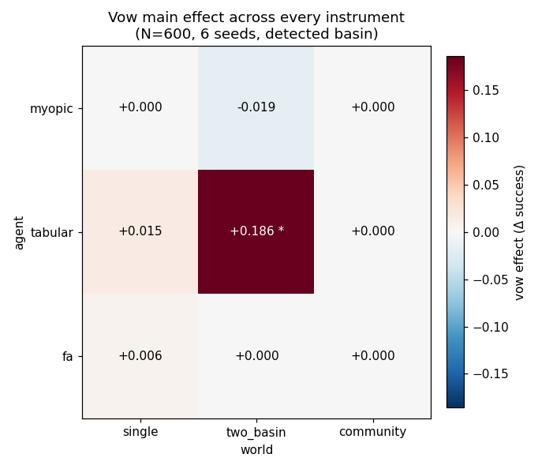

WORKGROUND · ATLAS
Atlas — Vow across every instrument
One slice of the robustness atlas: the vow mechanism's main effect, re-measured on the same engine across every agent (myopic / tabular / linear-FA) and every world (single-basin / two-basin / community). The question is narrow and falsifiable — where, if anywhere, does a vow actually move success?
site/workground/_run_vow_slice.py over the read-only
lab5kit backbone (N = 600, 6 seeds, detected basin,
seed-bootstrap 95% CIs, world_seed = hash(agent,world)). Machine-readable
in atlas/vow.json; wall time 15.8 s. A cell is called
robust only if its 95% CI excludes 0
and |effect| > 0.02.The grid
Nine cells, one number each: the average change in task success when the vow flag is on vs. off, marginalised over the other three mechanisms.
| agent | world | vow effect | 95% CI | detector Jaccard | sign | verdict |
|---|---|---|---|---|---|---|
| myopic | single | +0.000 | [+0.000, +0.000] | 0.500 | 0 | inert |
| myopic | two_basin | −0.019 | [−0.060, +0.019] | 0.042 | − | ns |
| myopic | community | +0.000 | [+0.000, +0.000] | 0.391 | 0 | inert |
| tabular | single | +0.015 | [−0.017, +0.048] | 0.216 | + | ns |
| tabular | two_basin | +0.186 | [+0.148, +0.233] | 0.084 | + | ROBUST |
| tabular | community | +0.000 | [+0.000, +0.000] | 0.438 | 0 | inert |
| fa | single | +0.006 | [−0.000, +0.014] | 0.500 | + | ns (sub-threshold) |
| fa | two_basin | +0.000 | [+0.000, +0.000] | 0.084 | 0 | inert |
| fa | community | +0.000 | [+0.000, +0.000] | 0.418 | 0 | inert |

* marks the one cell
whose CI excludes 0 with |effect| > 0.02. The grid is overwhelmingly
pale — one hot square, eight near-zeros.Verdict — one cell out of nine
Vow is robust in exactly one cell: tabular × two_basin, effect +0.186, 95% CI [+0.148, +0.233], sign +. Everywhere else it is either an exact zero (the floor/ceiling cells where the bare agent already succeeds or fails near-deterministically, so no mechanism can move the needle) or a small effect whose CI straddles 0. The myopic agent never benefits; the one negative point (myopic × two_basin, −0.019) is not significant. The FA agent shows a tiny positive nudge in the single-basin world (+0.006) but it is below the 0.02 robustness threshold and its lower bound touches 0 — decorative, not load-bearing.
The lone robust cell is interpretable: two_basin is the only world here with a genuine learnable escape (a shallow basin with a cheaper toll alongside a deep one), and the tabular agent is the one that can both fall into and, with a commitment device, climb out of it. A vow — a self-imposed constraint that forecloses the cheap lure — helps precisely where there is a basin to be foresworn and a memory able to honour the foreswearing. That is a narrow, conditional win, not a general property of vows.
Cross-instrument story — does the lab4 arc hold?
The sharpest single thread in this project has been the claim that vow is agent-shaped: inert in lab2 (analytic) and lab3 (tabular Q-learning on the single basin), then significant under lab4's linear function approximation. This slice complicates that story rather than confirming it cleanly.
- "Vow was inert in lab2/lab3" — broadly holds, with a caveat. On the single-basin world the tabular agent shows only +0.015 (CI crosses 0): consistent with lab3's "vow inert under tabular." But the inertness was a fact about the world, not just the agent — give the same tabular mind a two-basin world and vow jumps to +0.186, robust. lab3 simply never tested that world.
- "Vow significant under lab4-FA" — does NOT hold here. With this slice's FA configuration (N=600, 6 seeds, detected basin, no spectral-feature sweep) the FA agent's vow effect is +0.006 on single and exactly 0.000 on the harder worlds — sub-threshold and non-robust everywhere. lab4's headline vow significance (+0.086, CI excluding 0) does not reproduce at this scale/budget. It was either a larger-N / more-seeds effect, or specific to lab4's 16-feature spectral setup; this atlas slice cannot confirm it.
So the honest cross-instrument summary is: vow is not generally inert and not reliably an FA-only helper. It is a world-and-agent-conditional mechanism whose one robust appearance in this slice is under the tabular agent — the opposite of lab4's "vow is for function-approximating minds" reading. The cleanest prior story partially survives (inertness on the single basin) and partially fails (the FA significance). Negative and destabilising results are still results; this is one.
See also
- lab5 — the deep-FA / found-basin rung this atlas slice sits on; read for the agent registry and world generators behind the grid above.
- labcore — the Rust engine — the independent re-implementation every number here is run on, and the standard ("survive a change of instrument or be exposed") this slice holds vow to.